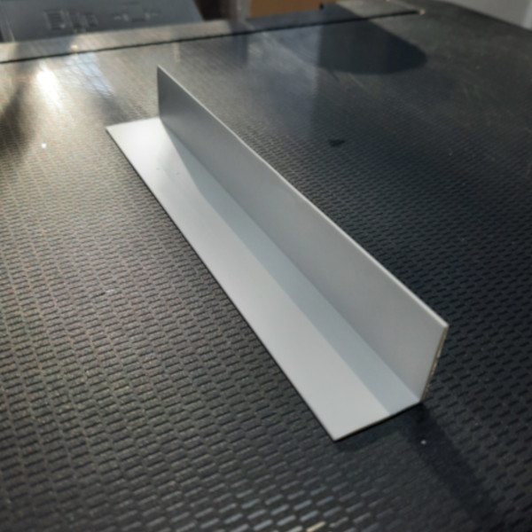
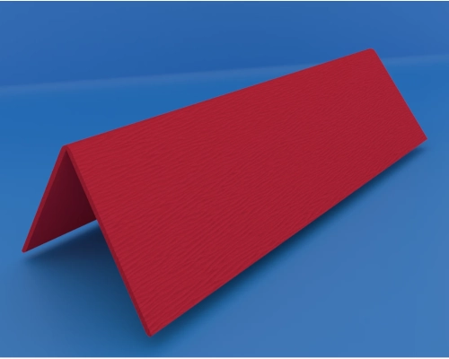
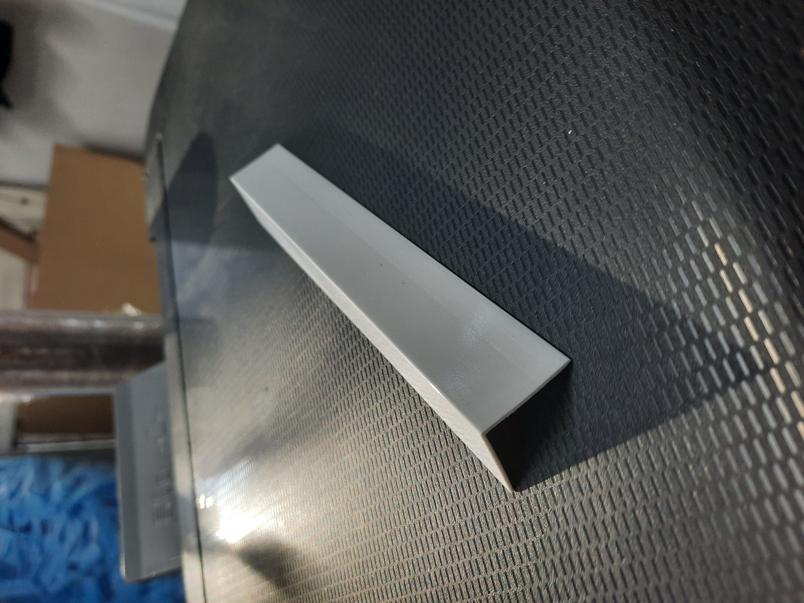
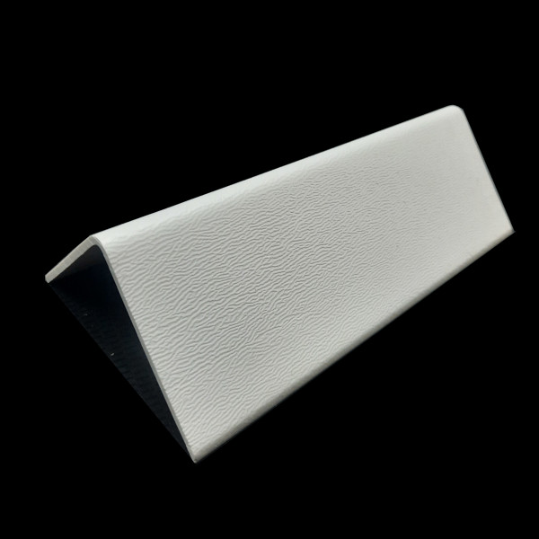
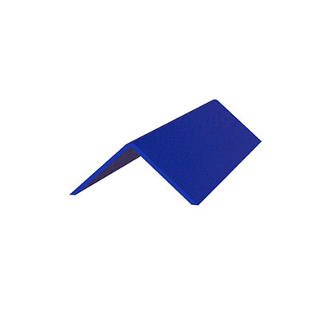

Ürünlerimiz
Geniş ürün yelpazemizle her ihtiyaca uygun çözümler

Çok Satan10x10 mm Plastik Köşebent
Küçük projeler, model yapımı ve hassas uygulamalar için ideal çözüm. 10x10 mm plastik köşebent sayfasını inceleyin.
- UV korumalı
- Kolay montaj
- Uzun ömürlü

15x15 mm Plastik Köşebent
Küçük ve orta ölçekli mobilya projeleri için mükemmel çözüm. 15x15 mm plastik köşebent sayfasını inceleyin.
- UV korumalı
- Kolay montaj
- Ekonomik çözüm
 Yeni
Yeni
20x20 mm Plastik Köşebent
Orta ölçekli mobilya projeleri ve yapısal uygulamalar için ideal. 20x20 mm plastik köşebent sayfasını inceleyin.
- Ağır yük kapasitesi
- Dayanıklı yapı
- Geniş kullanım alanı

25x25 mm Plastik Köşebent
Büyük mobilya projeleri ve ağır yük uygulamaları için güçlendirilmiş. 25x25 mm plastik köşebent sayfasını inceleyin.
- Güçlendirilmiş yapı
- Ağır yük kapasitesi
- Endüstriyel kalite
 Çok Satan
Çok Satan
30x30 mm Plastik Köşebent
90 derece köşe birleşimleri için ideal, yüksek dayanıklılık. 30x30 mm plastik köşebent sayfasını inceleyin.
- UV korumalı
- Kolay montaj
- Uzun ömürlü

40x40 mm Plastik Köşebent
Endüstriyel uygulamalar ve ağır yük taşıyan sistemler için ideal. 40x40 mm plastik köşebent sayfasını inceleyin.
- Ağır yük kapasitesi
- Reforse edilmiş
- Endüstriyel kalite

Premium50x50 mm Plastik Köşebent
En ağır yük taşıyan endüstriyel uygulamalar için mükemmel. 50x50 mm plastik köşebent sayfasını inceleyin.
- Çift güçlendirilmiş
- En ağır yük kapasitesi
- Profesyonel çözüm

Özel Ürün75x75 mm Plastik Köşebent
En ağır yük taşıyan özel endüstriyel uygulamalar için ideal. 75x75 mm plastik köşebent sayfasını inceleyin.
- Üç kat güçlendirilmiş
- En ağır yük kapasitesi
- Mühendislik standardı
L Tipi Köşebent - 30x30mm
90 derece köşe birleşimleri için ideal, yüksek dayanıklılık. Daha fazla bilgi için 30x30 mm plastik köşebent adresini ziyaret edebilirsiniz.
- UV korumalı
- Kolay montaj
- Uzun ömürlü
L Tipi Köşebent - 40x40mm
Daha büyük projeler için güçlendirilmiş L tipi köşebent
- Ağır yük kapasitesi
- Reforse edilmiş
- Endüstriyel kalite
 Yeni
Yeni
T Tipi Köşebent - 25mm
T üçlü birleşim noktaları için mükemmel çözüm
- 3 yönlü bağlantı
- Stabil yapı
- Modüler tasarım
Düz Köşebent - 50x20mm
Geniş kullanım alanı, esnek uygulama imkanı
- Esnek kullanım
- Dekoratif görünüm
- Ekonomik çözüm
Ayarlanabilir Köşebent
Farklı açılar için ayarlanabilen çok yönlü ürün
- 0-180 derece ayar
- Çok yönlü kullanım
- Profesyonel çözüm
Mini L Tipi Köşebent - 15x15mm
Küçük projeler ve hassas uygulamalar için mini boy
- Kompakt tasarım
- Hassas işçilik
- Dekoratif